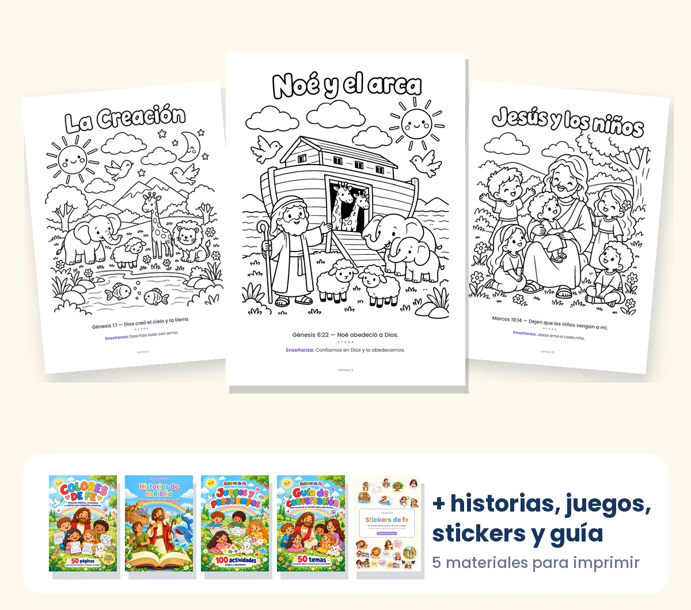

Que tus hijos conozcan a Dios pintando, jugando y leyendo
🎁 Kit completo · 5 materiales
Una forma divertida de acercarse a Dios: 50 láminas para pintar, 40 historias de la Biblia para leer, más de 100 juegos, 162 stickers y una guía para platicar en familia. Lo descargas al instante y lo imprimes en casa las veces que quieras.

Todo el kit: $197 MXN · pago único
QUIERO EL KIT COMPLETO →🖨️ ¿No tienes impresora? Lo imprimes en cualquier papelería cerca de tu casa.
🙌 ¿Das catequesis? Lo imprimes para cada niño de tu grupo, las veces que quieras. Ver cómo
Así lo usamos en casa 💛
Mira por dentro antes de comprar 👀
Estas son láminas reales del kit. Cada una trae su versículo y una enseñanza simple.
 Jesús busca a la ovejita
Jesús busca a la ovejita
 Noé y el arca
Noé y el arca
 Moisés abre el mar
Moisés abre el mar
 David y Goliat
David y Goliat
 Jonás y el gran pez
Jonás y el gran pez
 El nacimiento de Jesús
El nacimiento de Jesús
 Jesús y los niños
Jesús y los niños
 Comparto con alegría
Comparto con alegría
 La Creación
La Creación
Desliza para ver más 👉 · Toca una lámina para verla grande
Una historia, tres momentos en familia
Todo el kit está conectado: cada historia tiene su lámina y su tema para platicar.

1. Leen la historia 📖
En la noche, o antes de pintar, leen juntos «Jesús busca a la ovejita», contada con palabras simples y fiel a la Biblia.
2. Pintan la lámina 🎨
Tu peque pinta la misma escena, con su versículo: «¡Alégrense conmigo! Encontré mi oveja perdida».

3. Platican 💬
La guía te da las preguntas («¿Cómo te sentirías si alguien saliera a buscarte?»), una idea para ese día y una oración corta. No hace falta saber de Biblia para acompañarlos.
Y cuando terminan, los juegos y los stickers les dan ganas de seguir: un laberinto, una sopa de letras o un sticker para la tabla de buenas acciones. ⭐
Todo lo que trae el kit 🎁
5 materiales pensados para usar juntos, con el mismo estilo de dibujo y revisados uno por uno.
50 láminas para pintar
- 40 escenas de la Biblia, de la Creación a los primeros cristianos.
- 10 láminas de valores para la vida diaria: gratitud, compartir, decir la verdad, ayudar en casa y más.
- Cada una con su versículo y una enseñanza simple.

Historias de la Biblia: 40 historias para leer
- Las mismas 40 historias de las láminas, contadas con palabras simples.
- Fieles a la Biblia: cada una con su ilustración a color y su cita bíblica.
- Al final, 10 versículos para aprender en familia.

Juegos y pasatiempos: más de 100 actividades
- Laberintos, sopas de letras, unir los puntos, sudokus con dibujos, contar y sumar, y más.
- Juegos para toda la familia: memorama, gato, lotería, dominó y 2 tableros.
- Abecedario de la A a la Z para repasar, con las respuestas al final.

Guía de conversación: 50 temas
- Un tema por lámina, con 2 preguntas para tu peque.
- Una idea para poner en práctica ese día y una oración corta.
- Espacio para anotar lo que dijo tu peque.

Stickers de fe: 162 stickers
- 15 hojas: personajes de la Biblia, milagros, frases de fe, valores y premios.
- Tabla semanal de buenas acciones para pegar un sticker cada día.
- Se imprimen en papel adhesivo, o en papel común y se pegan con pegamento.
Ya lo usan más de 60 familias 💛
Imprimes, pintan y platican. Así de simple.

Kit completo Colores de Fe
Lo recibes por correo apenas se confirma el pago, listo para imprimir en casa o en cualquier papelería.
- 50 láminas para pintar (40 de la Biblia + 10 de valores)
- 40 historias de la Biblia para leer
- Más de 100 juegos y pasatiempos
- 162 stickers + tabla de buenas acciones
- Guía de conversación con 50 temas
- Imprimes las veces que quieras
¿Tienes dudas? Escríbenos con confianza a hola.coloresdefe@gmail.com. ¡Bendiciones!
Es para ti si…
- ✔️ Quieres que tus hijos conozcan a Dios desde chiquitos, sin sermones.
- ✔️ Buscas un plan sin pantallas para la tarde, el fin de semana o las vacaciones.
- ✔️ Acompañas a niños en la iglesia, la escuela dominical o la catequesis.
- ✔️ Buscas un regalo distinto para nietos, sobrinos o ahijados.
“Y estas palabras que yo te mando hoy, estarán sobre tu corazón; y las repetirás a tus hijos, y hablarás de ellas estando en tu casa…”
DEUTERONOMIO 6:6-7
Por qué hice Colores de Fe 💛
Soy mamá, y quería que mis hijos conocieran a Dios desde chiquitos. Pero me encontré con algo que seguro te pasa: los textos de la Biblia no son fáciles de explicar a un niño de 4 o 5 años.
Al mismo tiempo, veía cómo las pantallas, las caricaturas y tanta sobreestimulación les iban robando algo muy valioso: el tiempo de ser niños, y el tiempo con nosotros.
Por eso hice Colores de Fe. Las historias más lindas de la Biblia, con palabras simples y una enseñanza que se entiende, para que pinten, jueguen y lean tranquilos, como niños, y para que nosotros nos sentemos al lado.
Porque los niños no aprenden solo con lo que les decimos: aprenden con el ejemplo. Cuando nos sentamos con ellos, platicamos y sabemos lo que piensan, podemos mostrarles con cosas de todos los días lo que Jesús nos enseña. Y ahí la fe empieza a echar raíz.
Que cada página sea una bendición para tu familia. 💛
Con cariño, la mamá detrás de Colores de Fe
Preguntas frecuentes
¿Son 50 historias distintas?
Son 50 láminas para pintar: 40 de historias de la Biblia y 10 de valores para la vida diaria. Además, el libro «Historias de la Biblia» trae esas mismas 40 historias contadas para leer, una por cada lámina. Así, cada historia se lee, se pinta y se platica.
¿Qué incluye el kit?
Cinco PDF: 50 láminas para pintar, el libro «Historias de la Biblia» con 40 historias, el cuaderno «Juegos y pasatiempos» con más de 100 actividades, 162 stickers para imprimir y la guía de conversación con 50 temas.
¿Es un libro físico?
No. Es un PDF digital: lo recibes por correo y lo imprimes en casa o en cualquier papelería, en hojas tamaño carta. No se envía ningún producto físico.
¿Y si no tengo impresora?
No hace falta tener una. Le mandas el PDF por WhatsApp o por correo a cualquier papelería o centro de copiado cerca de tu casa y te lo imprimen en hojas tamaño carta, a color o en blanco y negro. Puedes imprimir solo las páginas que vayas a usar y volver por más cuando quieras.
¿Para qué edades está pensado?
Está pensado para niños de kínder y de los primeros años de primaria (más o menos de 3 a 8 años). Los más grandes pueden hacerlo a su ritmo, y con los más chiquitos es un lindo momento para compartir.
¿Hace falta saber de la Biblia para usarlo?
No. Las historias están contadas con palabras simples y la guía te da las preguntas y una oración para cada tema. Solo tienes que sentarte a su lado.
¿Puedo volver a imprimir?
Sí. Una vez descargado el archivo, puedes volver a imprimir las páginas cuando las necesites, para tu familia o para el grupo de niños que acompañes. Lo que no se permite es compartir el archivo ni revenderlo.
¿Lo puedo usar en la catequesis?
Sí. Puedes imprimir las láminas, las historias y los juegos para cada niño de tu grupo, todas las veces que quieras. Lo que no se permite es compartir el archivo con otras catequistas ni revenderlo: cada una puede comprar el suyo.
¿Cómo son los juegos y pasatiempos?
Es un PDF de 131 páginas con más de 100 actividades de la Biblia, ordenadas de fácil a difícil: pintar por números, laberintos, unir los puntos, sopas de letras, crucigramas, sudokus con dibujos, números, píxeles, juegos en familia y un abecedario. Al final tiene las respuestas.
¿Cómo son los stickers?
Es un PDF de 15 hojas con 162 stickers para imprimir: personajes de la Biblia, milagros y parábolas de Jesús, frases de fe, valores y más, con una tabla semanal de buenas acciones. No vienen adhesivos: los imprimes en papel adhesivo, o en papel común y los pegas con pegamento.
¿Cómo puedo pagar?
Con tarjeta de crédito o débito, o en efectivo en OXXO. Si pagas en OXXO, recibes una ficha de pago y el material te llega cuando se acredita (puede tardar hasta un día hábil).
¿Cuándo recibo el material?
Apenas se confirma el pago, te llega un correo de Hotmart con el acceso para descargar. Con tarjeta es al instante; con OXXO, cuando se acredita el pago. Si no lo ves, revisa spam o promociones, o escríbenos a hola.coloresdefe@gmail.com.
¿Tiene garantía?
Sí, 7 días. Si el material no es lo que esperabas, pides el reembolso desde tu cuenta de Hotmart dentro de los 7 días de tu compra y te devuelven el dinero. Si tienes un problema con el archivo, escríbenos a hola.coloresdefe@gmail.com.
“Instruye al niño en su camino, y aun cuando fuere viejo no se apartará de él.”PROVERBIOS 22:6
50 láminas, 40 historias, más de 100 juegos. Pero, sobre todo, cientos de momentos para sembrar la fe en casa 💛
QUIERO EL KIT COMPLETO →¡Que Dios bendiga tu hogar! 🙏